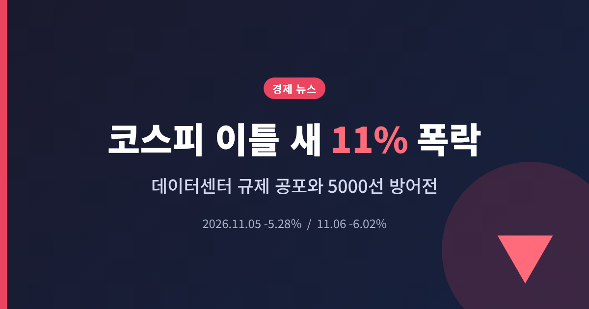
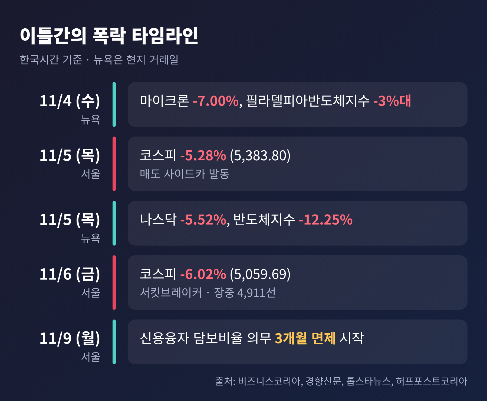
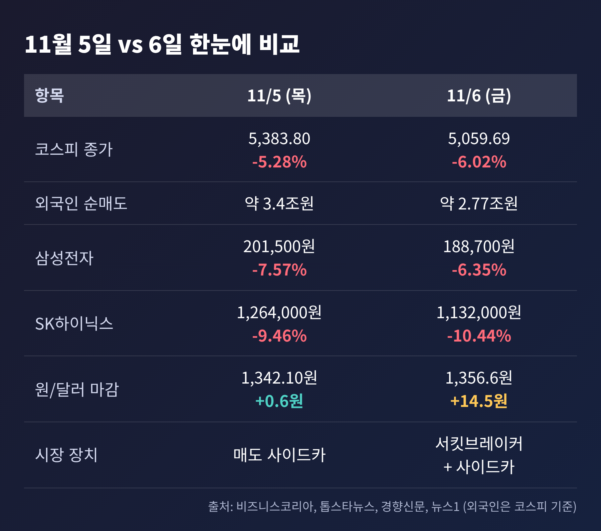
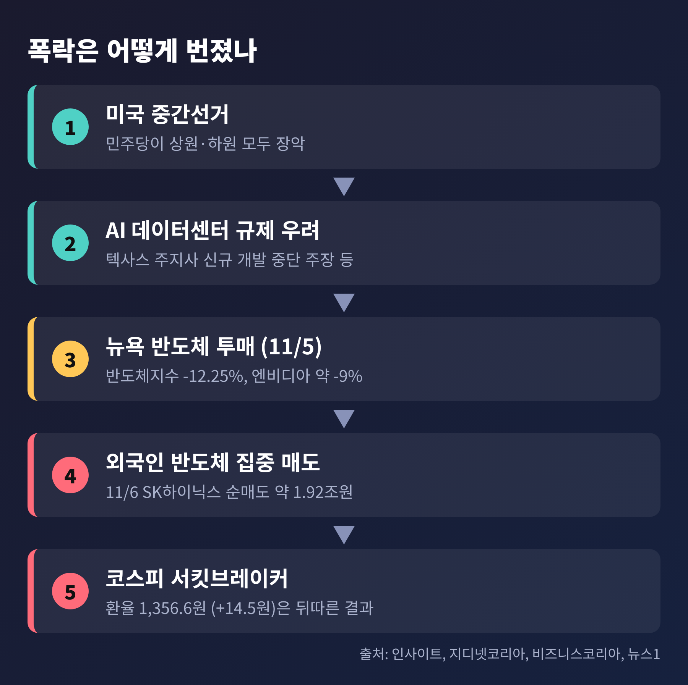
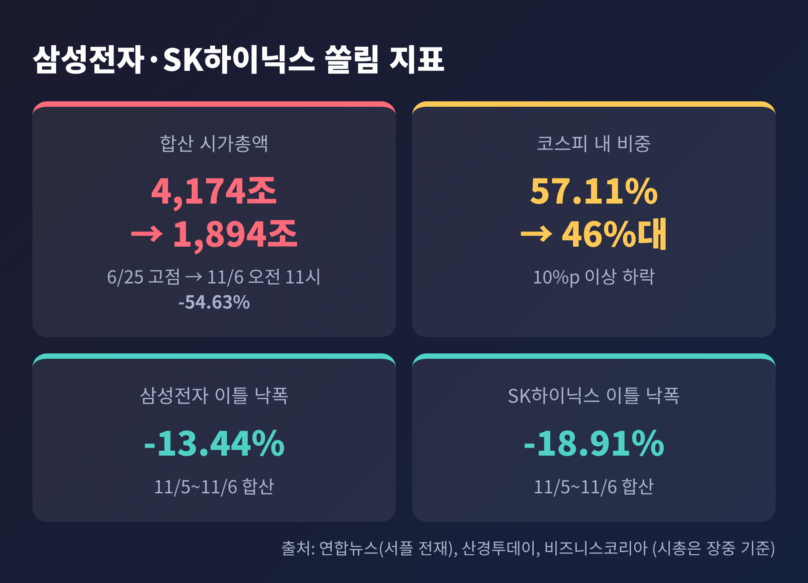
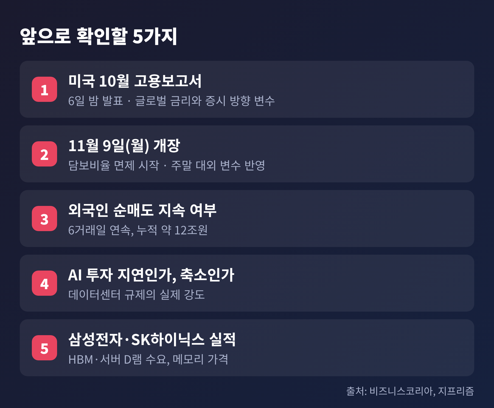

3줄 요약
오늘은 11월 5일과 6일 이틀에 걸친 코스피 폭락의 원인과 쟁점을 정리해 보겠습니다. 외국인 수급, 환율, 반도체 쏠림이 각각 어떤 역할을 했는지 숫자로 따라가 봅니다. 마지막에는 앞으로 확인할 지표도 짚겠습니다.
11월 4일 5,683.80이던 코스피는 5일 5,383.80으로 마감했습니다. 300포인트, 5.28% 하락입니다. 6일에는 5,059.69로 324.11포인트, 6.02%를 더 잃었습니다.
6일 장은 시초부터 거칠었습니다. 오전 9시 3분경 8%대 급락이 나오자 1단계 서킷브레이커가 발동되어 20분간 거래가 멈췄습니다. 장중 저점은 4,911선이었고, 코스피가 5,000선 아래로 내려온 것은 2월 6일 이후 약 9개월 만이었습니다. 이후 기관 매수로 5,000선을 간신히 지켜냈습니다.
매도 사이드카는 코스피와 코스닥에서 이틀 연속 걸렸습니다. 코스닥은 6일 644.27로 마감했고, 이틀간 약 8% 하락했습니다. 경향신문 영문판이 전한 수치입니다.

주가를 전고점과 견주면 충격이 더 실감납니다. 코스피는 6월 19일 장중 9,385.59로 사상 최고치를 쓴 바 있습니다. 6일 종가는 이 장중 고점보다 약 46% 낮습니다. 제가 두 수치로 직접 계산한 값입니다.

급락의 원인으로는 흔히 외국인 수급과 환율이 먼저 거론됩니다. 확인해 보니 순서가 달랐습니다. 11월 5일 원/달러 환율은 1,342.10원으로 전일보다 0.6원 오르는 데 그쳤습니다. 그날 급락을 환율 탓으로 돌리기는 어렵습니다.
실제 출발점은 미국입니다. 중간선거에서 민주당이 상원과 하원을 모두 장악하면서 AI 데이터센터 인허가와 환경 규제가 강화될 수 있다는 우려가 번졌습니다. 보도에 따르면 텍사스의 민주당 주지사는 신규 데이터센터 개발의 즉각 중단을 주장했고, 버니 샌더스 상원의원은 전국적인 건설 중단을 촉구했습니다.
시장 반응은 두 차례에 걸쳐 왔습니다. 11월 4일 뉴욕에서는 다우와 나스닥이 올랐는데도 마이크론이 7.00%, 필라델피아반도체지수가 3%대 떨어졌습니다. 이 흐름이 5일 서울장을 눌렀습니다. 이어 5일 뉴욕에서는 나스닥이 5.52%, 필라델피아반도체지수가 12.25% 폭락했습니다. 엔비디아와 브로드컴은 약 9%, 퀄컴은 10% 내렸습니다. 그 충격이 6일 서울장의 서킷브레이커로 이어졌습니다.

팀 홀랜드 오리온 최고투자책임자는 투자자들이 선거 결과가 AI 설비투자에 미칠 영향을 파악할 때까지 시장에서 물러나고 있다고 설명했습니다. 규제 우려는 아직 '가능성'입니다. 실제로 투자가 줄어든다는 확인은 아닙니다.
외국인은 5일 코스피에서 약 3.4조원을 순매도했습니다. 비즈니스코리아는 이를 사상 최대로 전했는데, 다른 매체에서 확인되지 않은 표현이라 단일 소스로 봐야 합니다. 6일에도 약 2조 7,700억원을 팔았습니다. 10월 30일부터 6거래일 연속 순매도이고, 누적 규모는 약 12조원입니다.
6일 매도는 특히 한 종목에 몰렸습니다. SK하이닉스 순매도가 약 1조 9,200억원으로, 삼성전자 약 1,300억원과 큰 차이가 납니다. 같은 반도체여도 외국인이 판 곳은 달랐습니다.
환율은 6일에야 움직였습니다. 원/달러 환율은 1,356.6원으로 14.5원 올랐고, 장중에는 1,362.2원까지 갔습니다. 외국인이 주식을 판 돈을 달러로 바꾸는 수요, 미국 정치 불확실성, 기술주 급락이 겹친 결과로 풀이됩니다. 수출업체의 달러 매도가 상승폭을 제한했습니다.
5일에는 환율이 거의 움직이지 않았고, 6일에는 14.5원 올랐습니다. 주식 매도가 먼저였고 환율이 뒤따랐습니다.
6일 삼성전자는 188,700원으로 6.35%, SK하이닉스는 1,132,000원으로 10.44% 내렸습니다. 이틀로 합치면 삼성전자 13.44%, SK하이닉스 18.91% 하락입니다. 시가총액 상위 20개 종목 가운데 6일에 오른 것은 네이버 하나뿐이었습니다. 코스피 하락 종목은 760개, 상승은 131개였습니다.
연합뉴스 집계로 두 회사의 합산 시가총액은 6월 25일 약 4,174조원에서 6일 오전 11시 기준 약 1,894조원으로 줄었습니다. 54.63% 감소입니다. 코스피 내 비중은 57.11%에서 46%대 중반으로 낮아졌습니다. 다만 한 매체는 이 비중을 '60%에 가까운 수준'으로 서술했습니다. 시점과 집계 기준이 다른 것으로 보여, 이 글에서는 장중 집계인 46%대를 따랐습니다.

쏠림은 오를 때는 지수를 끌어올리는 힘이었고, 내릴 때는 같은 힘으로 지수를 끌어내립니다. 좋은 점과 아쉬운 점이 한 몸이라는 뜻입니다.
6일 오전 10시 30분 이형일 부총리 겸 재정경제부 장관 주재로 시장상황점검회의가 열렸습니다. 금융위원장, 금감원장, 한국은행 부총재가 참석했습니다. 정부는 하락 원인을 AI 정책 불확실성과 글로벌 투자심리 위축으로 진단하고, 국내 증시가 대외 요인에 과도하게 반응했다고 평가했습니다.
핵심 조치는 증권사 신용융자 담보비율 140% 유지 의무를 11월 9일부터 3개월간 면제하는 것입니다. 주가가 빠져 담보가 부족해져도 곧바로 강제로 팔리는 반대매매를 줄이겠다는 취지입니다.
한계도 분명합니다. 보도에 따르면 면제가 모든 반대매매의 중단을 뜻하지는 않습니다. 적용 기준은 증권사가 정합니다. 서울경제 영문판은 2022년 7월 이후 첫 조치이고, 2020년 비슷한 조치 일주일 뒤 대규모 강제매도가 나온 적이 있다고 전했습니다. 이 두 가지는 단일 소스입니다.
신용융자 잔고는 11월 4일 28.64조원으로 6월 24일 고점보다 25.9% 줄어든 상태였습니다. 이미 상당 부분 정리된 상태였다는 서울경제 영문판 집계입니다. 정부는 올해 성장률 3%대 중반, 수출 1조 달러, 기업 영업이익 900조원 상회를 근거로 기초체력을 강조했습니다.
약세론은 AI 낙관의 한계에 닿았다고 봅니다. IBK투자증권과 토스증권은 유동성이 소진됐다고 평가했고, 토스증권은 메모리업체가 수요 감소에 직접 노출된다고 지적했습니다. 규제와 프로젝트 지연이 장기적으로 반도체 이익을 깎을 수 있다는 논리입니다.
강세론은 과잉 반응에 무게를 둡니다. 미래에셋증권은 단기 수급 쏠림으로 낙폭이 과했다고 봅니다. JP모건은 이번 매도가 기업 펀더멘털 변화보다 투자자 포지션 조정에 가깝다고 진단했습니다. 골드만삭스는 1954년 이후 18번의 중간선거 뒤 12개월 동안 S&P500이 모두 올랐다고 짚었습니다. 다만 이는 미국 지수의 통계이고, 코스피의 반등을 보장하지는 않습니다.
규제의 크기에 대한 추정도 제각각입니다. 골드만삭스는 미국 신규 데이터센터 용량의 약 45%가 일시 중단될 수 있다고 봤고, 미래에셋증권은 최대 13GW, 2035년까지 예상 신규 용량의 약 8%가 영향을 받는다고 추산했습니다. 두 숫자는 기준이 달라 단순 비교가 어렵습니다. 둘 다 중앙데일리 보도를 통해 확인한 단일 소스입니다.

첫째, 6일 밤 발표되는 미국 10월 고용보고서입니다. 비즈니스코리아가 전한 증권사 연구원은 이 지표가 글로벌 금리와 증시 방향을 가를 수 있다고 봤습니다. 둘째, 9일 월요일 장입니다. 담보비율 면제가 시작되는 날이자, 주말 사이 대외 변수가 반영되는 날입니다.
셋째, 외국인 순매도가 잦아드는지입니다. 지프리즘은 반등 조건으로 이 점을 꼽았습니다. 넷째, 데이터센터 투자가 '지연'에 그치는지 '대폭 축소'로 가는지입니다. 지프리즘은 마이크로소프트의 영국 프로젝트 철수 보도가 있었지만 AI 투자 전반의 축소를 뜻하지는 않는다고 짚었습니다. 다섯째, HBM과 서버 D램 수요, 삼성전자·SK하이닉스의 실적입니다.
미래에셋증권은 연말까지 변동성이 커질 수 있으니 유의해야 한다는 의견을 냈습니다. 한 번에 방향이 나올 장은 아니라는 이야기입니다.
정리하면 이렇습니다.
이번 폭락은 환율의 문제가 아니라, 한 나라의 증시가 소수 반도체주와 해외 정책 한 줄에 얼마나 크게 흔들리는지를 보여준 사건입니다.
"무너진 것은 5,000이라는 숫자보다, 한 방향에 모두 기대고 있었다는 사실이었다."
6월에는 9,000선을 넘보던 지수가 지금은 5,000선을 두고 공방을 벌입니다. 바닥이었는지 묻는다면, 월요일 개장이 첫 번째 답을 줄 것입니다. 그 숫자를 차분히 지켜보시길 권합니다.
본 글은 공개된 보도를 정리한 정보 제공용 해설이며, 특정 종목이나 상품의 매수·매도를 권유하는 투자 권유가 아닙니다. 투자 판단과 그 결과의 책임은 투자자 본인에게 있습니다. 수치는 2026년 11월 6일 저녁 기준 보도를 따랐고 이후 달라질 수 있습니다.